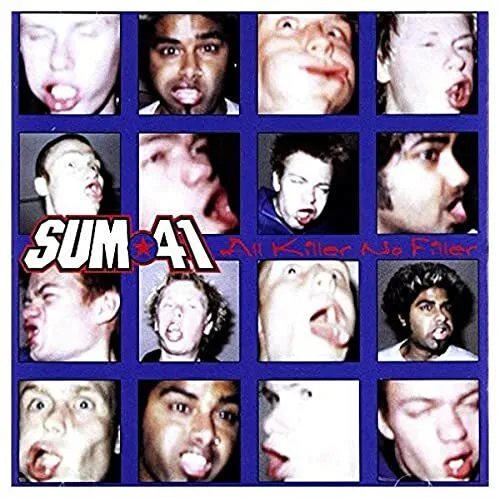
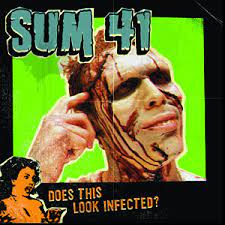
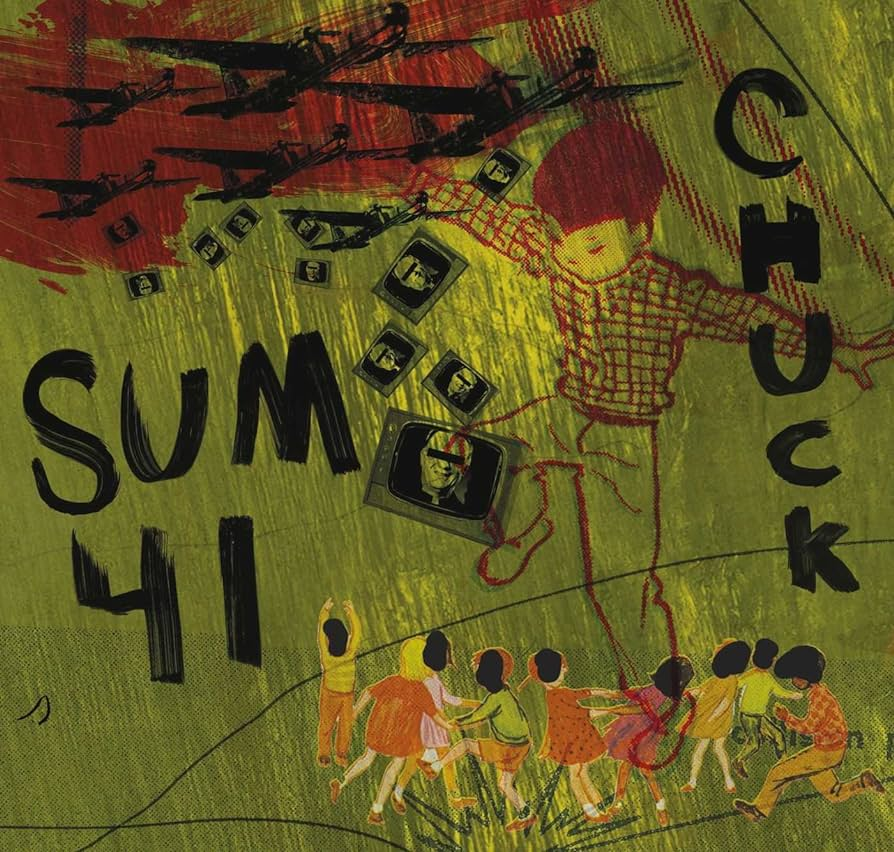
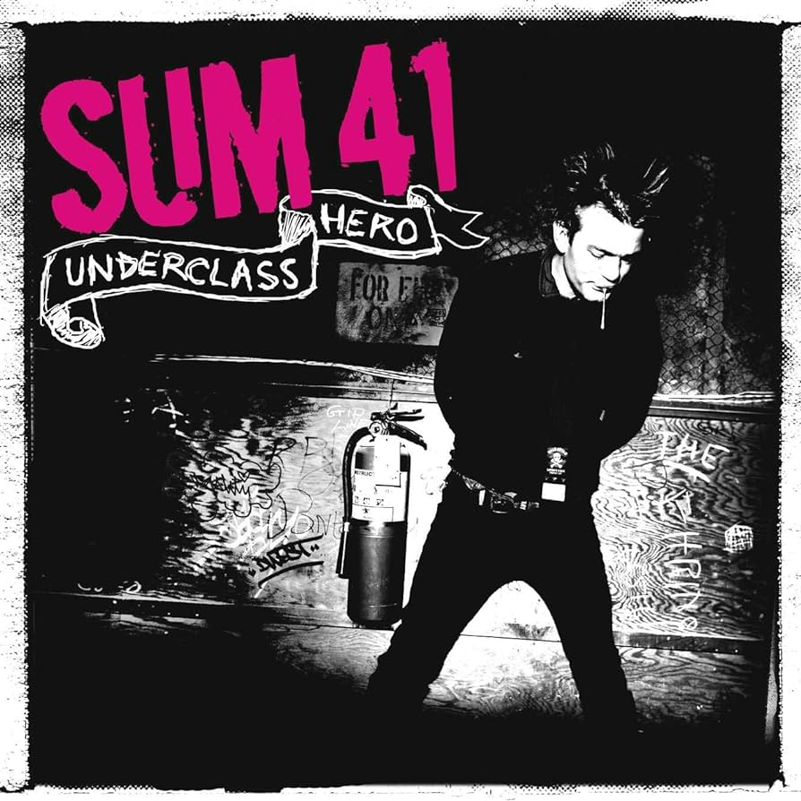
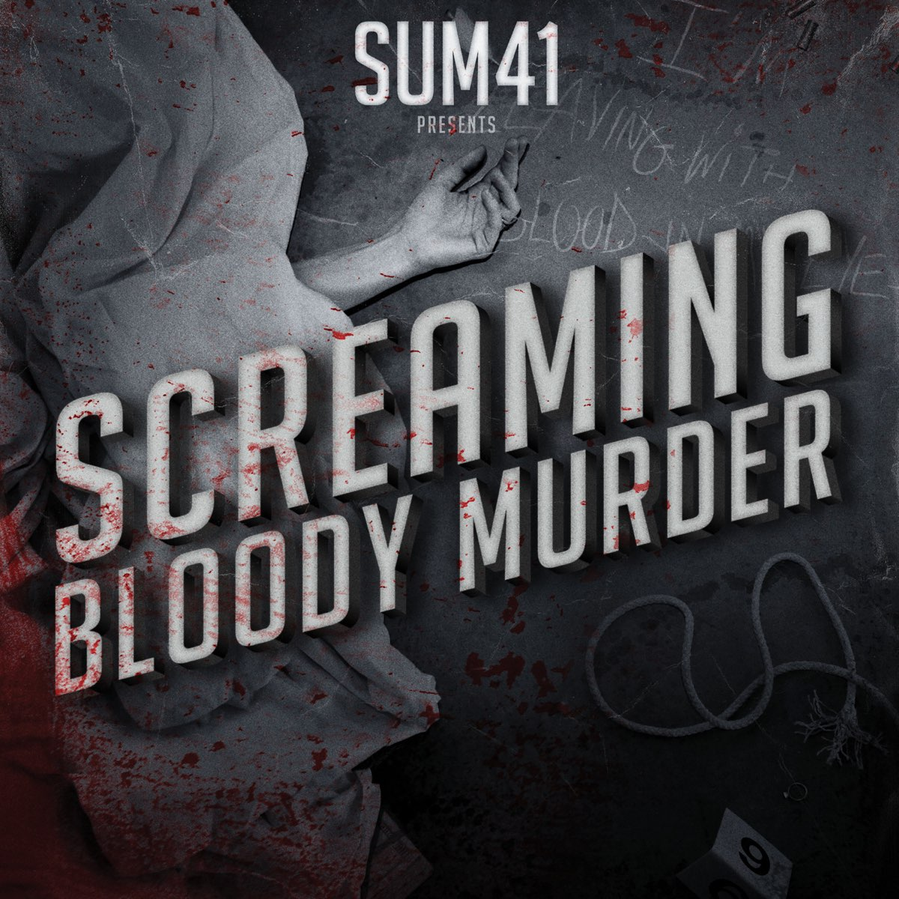
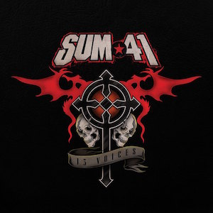
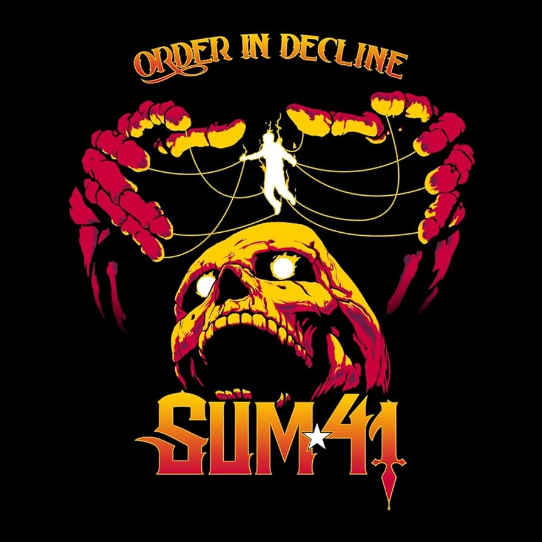

Sum41 es una banda de rock originaria de Ontario, Canadá. Su formación se remonta a 1996, y actualmente está integrada por Deryck Whibley (guitarra rítmica y voz principal), Dave "Brownsound" Baksh (guitarra solista), Jason McCaslin (bajo), Tom Thacker (guitarra solista y rítmica, teclados) y Frank Zummo (batería). En abril de 2013, el baterista Steve Jocz anunció su salida de la banda. Se han vendido más de 10 millones de álbumes en todo el mundo.
La banda fue formada por el cantautor Deryck Whibley y el ex batería Steve "Stevo" Jocz bajo el nombre de Kaspir. Antes de unirse a la banda, Jocz fue parte de otra banda y entonces Whibley estaba convencido de que «era el mejor batería del lugar». Un año después se unió Dave "Brownsound" Baksh como guitarrista líder y, después de tocar con varios bajistas, reclutaron a Jason "Cone" McCaslin para completar el grupo. El grupo, entonces Kaspir, solía realizar versiones de la banda NOFX. Los integrantes de la agrupación decidieron cambiar el nombre de esta para un concierto de Supernova el 28 de septiembre de 1996, cuando entonces se cumplían cuarenta y un días de iniciarse el verano (en inglés, summer).
All Killer No Filler es el primer álbum de estudio de la agrupación canadiense Sum 41, lanzado el 18 de mayo de 2001 con la colaboración de Island Records. El álbum fue disco platino, obteniendo ventas superiores al millón de copias. Las letras de las canciones tratan varios temas como la sociedad, pereza, lujuria, relaciones, etc. En uno episodio de MTV Cribs mostrando la casa de Steve, Deryck dijo que la mayor parte de las canciones de All Killer No Filler fueron escritas en el sótano de Steve.

Canciones
| Portadas de discos | ||
| Nombre | Año | Portada |
| All Killer No Filler | 2001 | |
| Does This Look Infected? | 2002 |  |
| Chuck | 2004 |  |
| Underclass Hero | 2007 |  |
| Screaming Bloody Murder | 2011 |  |
| 13 Voices | 2016 |  |
| Order In Decline | 2019 |  |